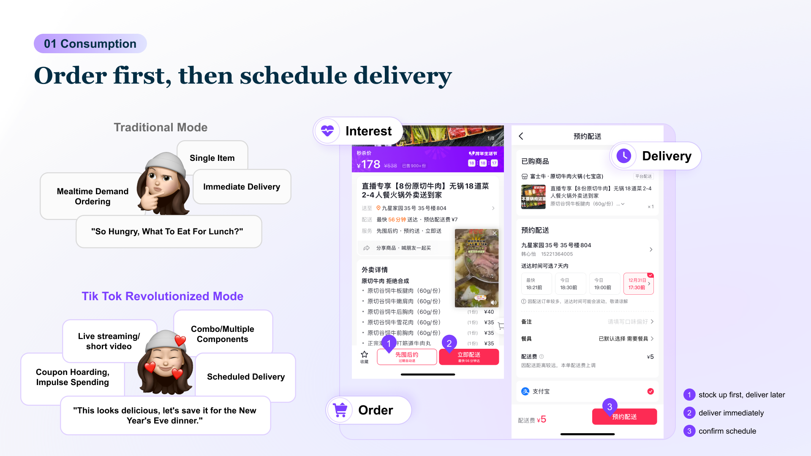

This project introduced TikTok's "Order Now, Deliver Later" food-delivery mechanism, allowing users to collect delivery vouchers during live streams or short videos and redeem them later when they actually want to eat.
Although the operation strategy behind this mechanism was innovative, the design direction was intentionally restrained. Our goal was not to add new gameplay, but to make this experience feel like a natural extension of the existing voucher logic users already understood.

To achieve this, we focused on two priorities:
For Users — Zero Friction Adoption
Make "Order Now, Deliver Later" vouchers behave exactly like familiar in-store vouchers, reducing cognitive load and keeping existing flows intact.
For Merchants — Minimal Operational Cost
Allow merchants to configure delivery items quickly with low maintenance and low onboarding effort, ensuring the model can scale efficiently.
This restrained, system-first approach helped a new business idea land smoothly on both ends—intuitive for users, and operationally sustainable for merchants.
TikTok Local Life explored how food delivery could support not only immediate hunger, but also future cravings triggered by content. Users might feel inspired in a live stream—"this looks amazing!"—but they usually are not hungry right now.
I led the product design for a new "Store-Now-Deliver-Later" mechanism that lets users collect meal vouchers during content consumption and redeem them later when they actually want to eat.

The new chain:
Content inspiration → Collect voucher → Store future intent → Activate later → Delivery
The goal was to make the new mechanism feel like it already belonged in the ecosystem.
This ensured the innovation happened at the business level, not at the cost of user experience complexity.
Food delivery and in-store vouchers were originally two separate ecosystems. My goal was to introduce the new mechanism without disrupting the main user flow:
This allowed the delivery scenario to integrate naturally into TikTok's current commerce structure.
Most content-driven craving happens before actual hunger. I redesigned the content-side UX to safely capture and store this impulse:
This transformed momentary emotion into future conversion potential.
To bridge the delay between inspiration and actual need, I designed a complete activation system:
Users only need to be inspired once — the system handles the rest.

To help merchants adopt this new model without extra burden, I designed:
This ensured the model could grow operationally, not just conceptually.
View Merchant Backend Platform

Synced product, content, voucher, delivery, and merchant ops teams to build an end-to-end mechanism.
Voucher logic, UX flows, refund rules, merchant mapping, and product structures.
Examined timing, UI patterns, and activation strategies to maximize re-engagement.
This project strengthened my ability to design system-level, restrained UX that serves complex business innovation:
It taught me to balance business creativity with UX discipline, and to design for both sides of the ecosystem—users and merchants.